圣诞肌密行动
失踪的资料
围绕“失踪的资料”构建节日主题互动活动。用户通过验证身份、完成任务、收集五张线索卡并合成情报，进入抽奖与证书分享；同时通过好友助力扩大活动参与和传播。
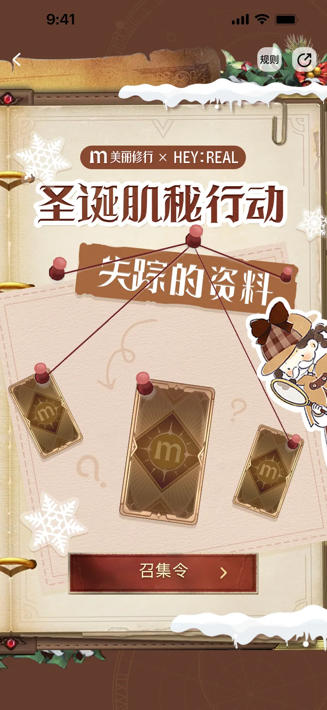
活动主线与交互步骤
01 / 任务收集到奖励分享将复杂活动拆分为连续的目标和状态反馈：身份验证开启任务，情报值兑换抽卡机会，五类线索卡集齐后合成情报，最终完成抽奖并生成专属证书。
从节日主视觉进入“失踪的资料”任务故事。
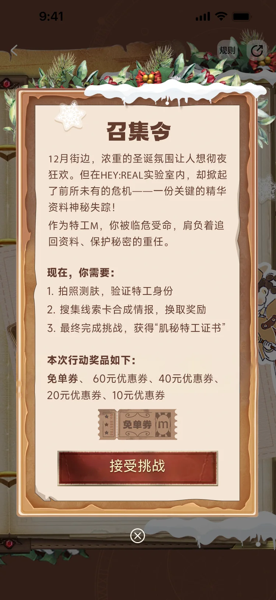
说明目标、奖励及“验证—收卡—合成”的任务路径。
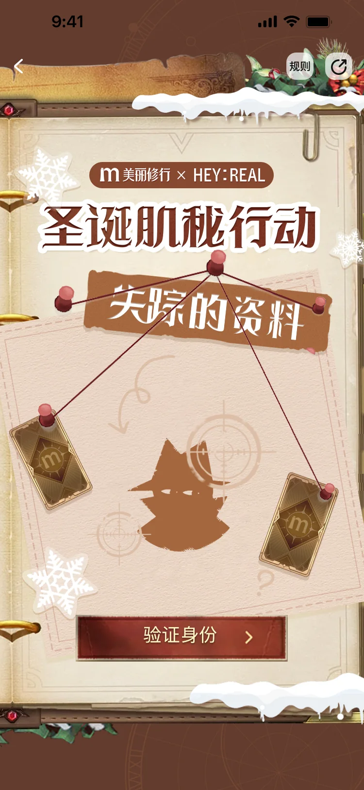
用户完成肌肤验证，获得对应的颜值报告。
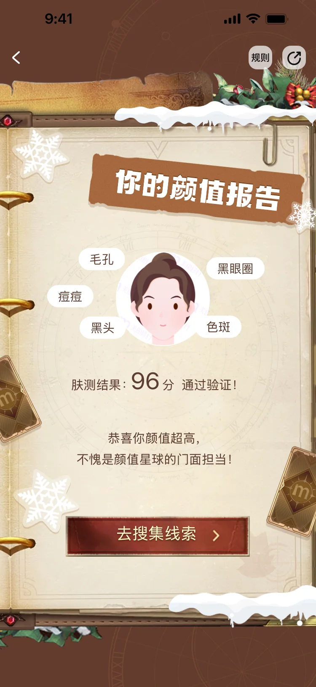
将检测结果转化为剧情中的“特工身份”反馈，并引导继续搜集。
通过悬浮提示引导用户打开情报值获取入口。
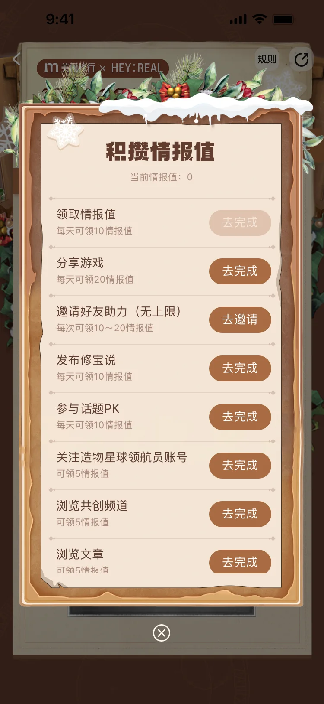
用任务清单承接浏览、分享、发布与邀请等参与动作。
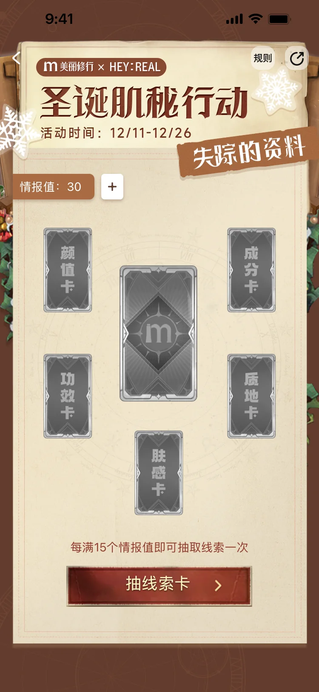
情报值达到门槛后开启抽卡，展示可收集的五类线索。
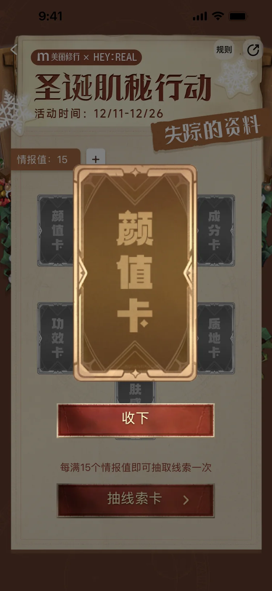
通过正面卡牌和收下按钮提供明确的抽取反馈。
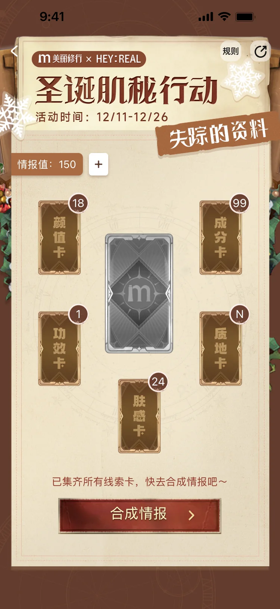
卡牌状态转为金色，提示用户可进入合成阶段。
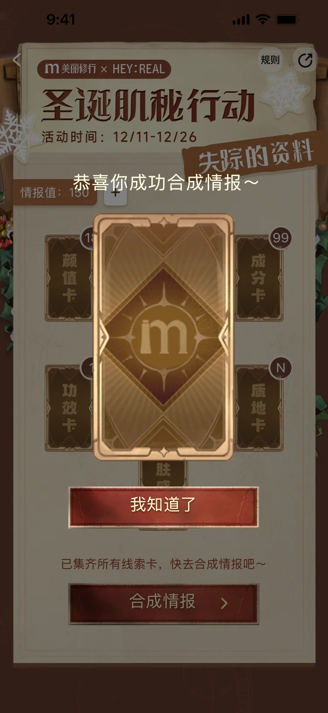
使用大尺寸卡牌与遮罩强调收集完成的关键时刻。
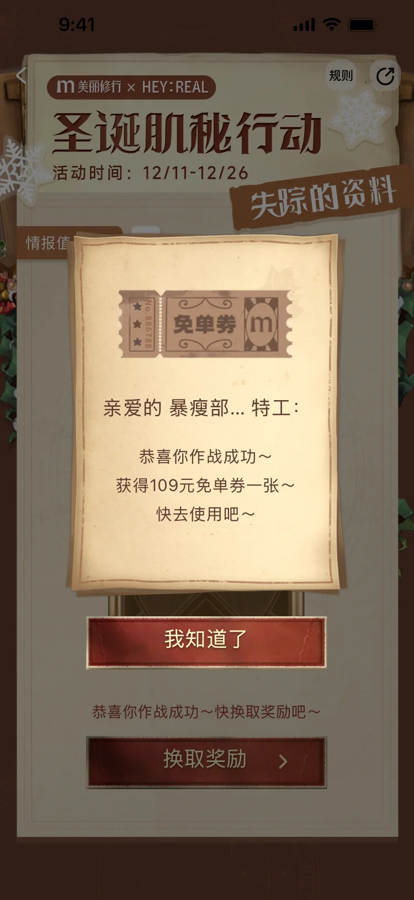
在完成合成后展示获得的免单券奖励。
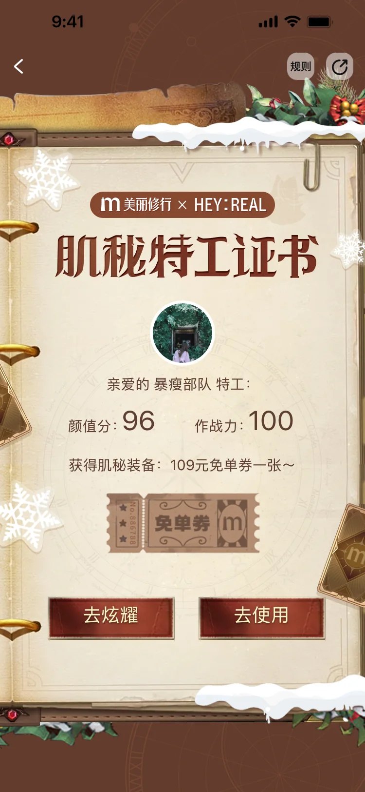
聚合个人结果与奖励，形成活动结束后的可分享内容。
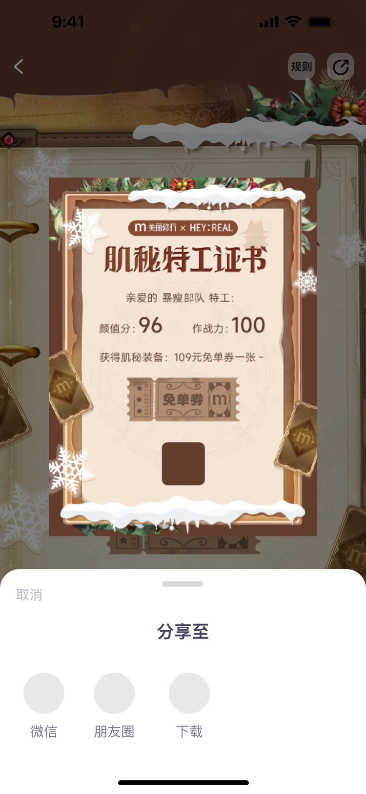
调起分享面板，将证书带入微信、朋友圈和下载场景。
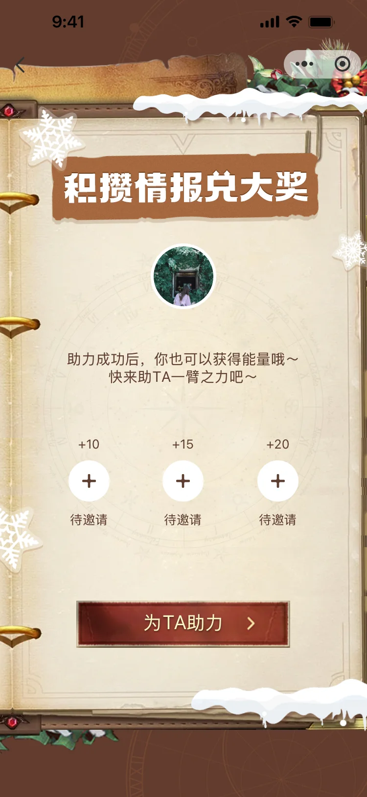
邀请好友助力，补充情报值并延伸活动传播链路。
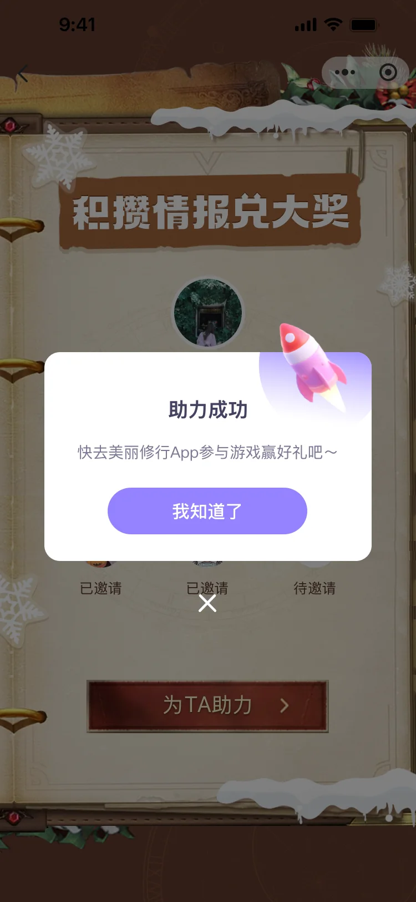
以轻量弹窗确认成功状态，并引导朋友进入活动。
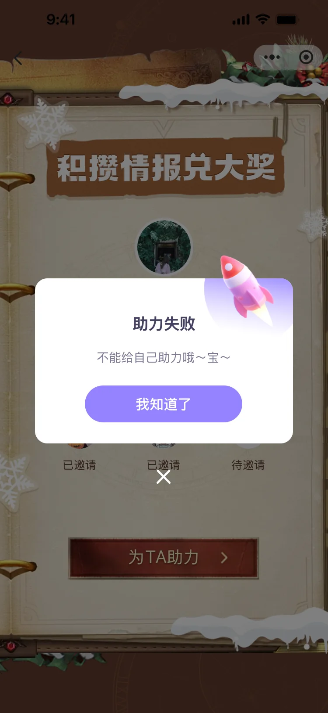
明确说明每日助力限制，避免用户对失败原因产生疑问。
UI 细节与状态思考
02 / 卡牌系统用同一张基础卡牌建立收集规则，再通过灰阶和金色区分未获得、已获得与合成完成状态；文字卡面帮助用户快速理解每张线索的类别。
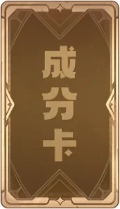
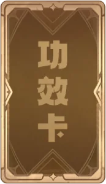
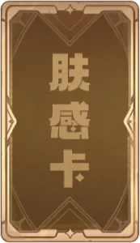
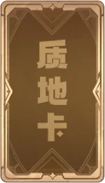
灰阶卡牌表示未获得，金色卡牌表示已收集，让进度无需额外说明即可被识别。
以情报值作为抽卡成本，任务清单、线索卡和奖励之间形成明确的激励循环。
抽卡、合成和抽奖均采用遮罩与大尺寸视觉反馈，强调完成任务后的仪式感。
开屏、Banner 与活动资源位
03 / 多触点传播将活动主视觉适配到开屏、信息流、热门入口、站内弹窗、话题活动与分享图，在不同尺寸中保留线索板、雪景和卡牌等核心识别元素。
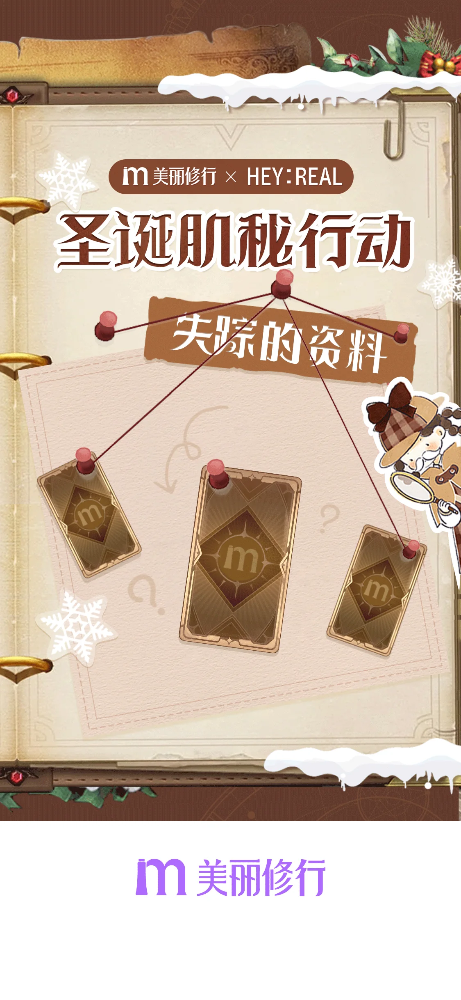
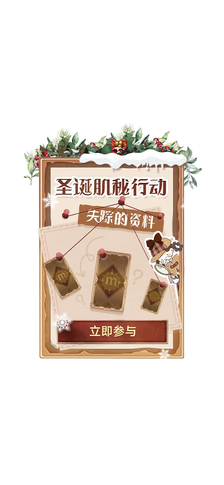
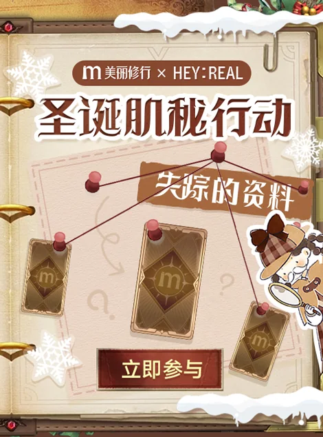
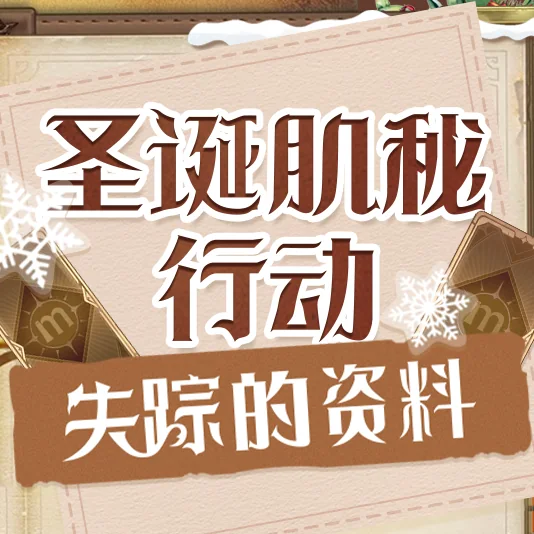
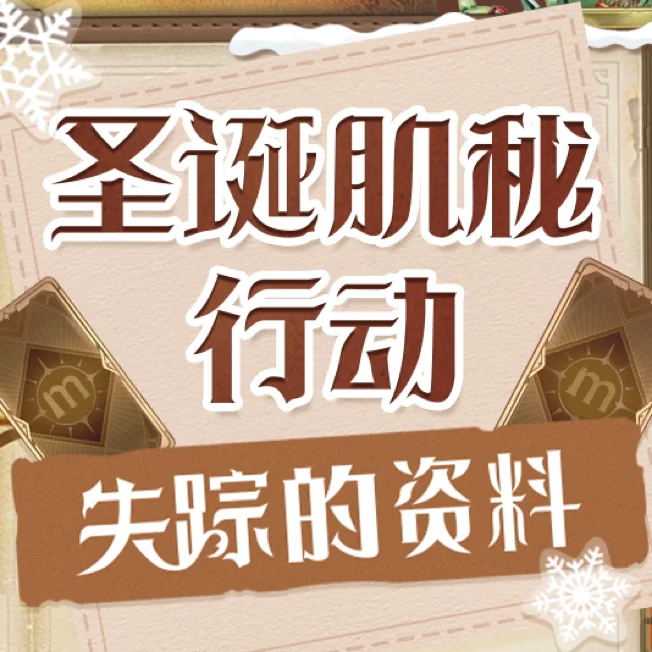
项目页面按用户进入、任务收集、奖励反馈和传播延展的顺序整理，集中呈现 H5 活动的界面与资源位设计。